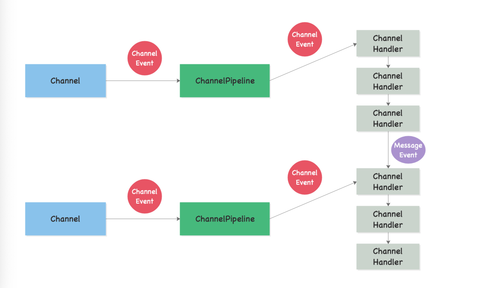
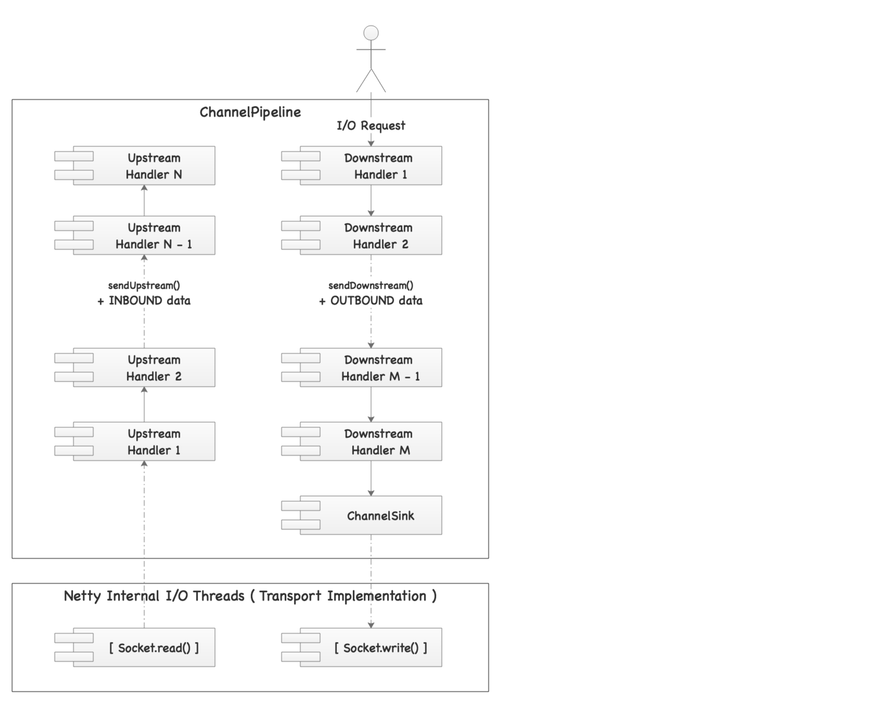

Netty中的Pipeline机制
1.引子：Unsafe
一般在讲Pipeline之前就不得不提到Netty中的Unsafe，只是这里的Unsafe和sun.misc.Unsafe是不可以同日而语的，它实际上是Netty中定义的io.netty.channel.Channel#Unsafe，按照官方Doc上的说法——Unsafe函数不允许被用户代码使用，这些函数是真正用于数据传输操作的，而且必须被IO线程调用。换句话说，真正依赖于底层协议/方案的实现是通过Unsafe封装过后的结果。本文不详细讲解原生的sun.misc.Unsafe，关于sun.misc.Unsafe的知识可参考：http://mishadoff.com/blog/java-magic-part-4-sun-dot-misc-dot-unsafe/。
从Netty中的Unsafe定义可以知道，Unsafe是定义在Channel内部的，若要真正理解Netty，那么Channel就是核心，那么接下来我们就讲讲关于Channel的事。
2.起源：Channel
引用【Reference】
之所以叫做起源是因为Channel几乎填充了整个Netty，在Netty中它是通讯的载体，简单说当Netty中的线程需要相互之间协同工作时，Channel就会登场。——但是真正在通讯过程执行逻辑的代码组件是ChannelHandler，Handler通常会翻译成处理器。
其次是姗姗来迟的ChannelPipeline，它又是何物？——其实可以理解为一个ChannelHandler的集合，它是ChannelHandler的容器，而一个Channel中只有一个ChannelPipeline，所有的ChannelHandler都会按照一定的顺序在ChannelPipeline中组织起来。Netty数据和状态的载体一般使用Event来存储，如：
- 传输数据会使用
MessageEvent； - 状态改变会使用
ChannelStateEvent； - 当Channel执行操作（调用处理器处理时）会产生对应的
ChannelEvent；
这些Event对象最终都会发送给ChannelPipeline，最后按照ChannelPipeline对ChannelHandler的编排顺序执行，先看看下边的图

举个例子，一个数据最开始被Channel接受时应该是一个MessageEvent，如图所示，最终处理后会生成一个数据对象，最终生成一个新的MessageEvent并且发送给下一个Handler来处理。从上图结构可以知道，Channel真正的通讯执行者是在Handler中来完成的，而核心流程是位于ChannelPipeline（只有它才包含了多个Handler）。
3.渗透：ChannelPipeline
从上一节可以知道，Netty中的Channel的核心流程实际上是ChannelPipeline，而它包含了两条线路：Upstream和Downstream：
- Upstream：上行，接收到的消息、被动的状态改变
- Downstream：下行，发送的消息、主动的状态改变
实际上ChannelPipeline接口包含了两个重要的方法分别对应上述两条心路：sendUpstream(ChannelEvent e)和sendDownstream(ChannelEvent e)；对应的ChannelPipeline中的Handler也包含了两类，并且每个类中都包含了对应的方法
- ChannelUpstreamHandler：对应的方法为handleUpstream
- ChannelDownstreamHandler：对应的方法为handleDownstream
最终看看下边的图来解释这个过程：
从上边的图可以看到多了一个叫做ChannelSink的东西，那么什么是ChannelSink呢？它有一个重要方法eventSink，这个方法可以接受任意一个ChannelEvent。"sink"的本意是下沉，那么ChannelSink实际上可以理解为Channel下沉的地方，——其实也可以换一种说法：处于末尾的万能Handler。
此处需要注意的地方就是：在一条”流”里，一个ChannelEvent并不会主动去经过所有的Handler，某个Handler中拿到的数据是由上一个Handler显示调用sendUp(Down)stream产生的，并且在处理完成过后交给下一个Handler。也就是说，每个Handler可以接收一个ChannelEvent，处理结束后若要继续，就显示调用sendUp(Down)stream主动发起一个新的事件，如果不需要继续处理，那么就在这里结束，只要不主动发起那么即使它后边有对应的Handler也不会执行。——这样的设计会导致整个结构中拥有最大的灵活性，当然对Handler本身的顺序也有严格要求。
如果想要看第三层梦境，那么直接参考引用原文就可以了，这里就不阐述ChannelPipeline的源代码层的信息了。
4. 终焉：Pipeline解决的问题
综上所述，实际上Netty的Pipeline的机制我相信读者已经有了大致的了解了，那么最后总结一下（这里就不按照引用作者的想法去阐述了）：
- 从Handler这种机制可以看到，Vert.x中使用的就是这种机制，一个Handler和另外一个Handler编连成一个完整的Handler的链，请求经过处理链去执行。被执行的数据在Netty中抽象成了ChannelEvent，这样抽象的好处是在通讯过程中形成了统一的数据规范（相当于有了一个统一的VO——Value Object），那么Handler拿到数据过后就只关心ChannelEvent数据本身，不去考虑底层的事，如同引用文中提到的编码、解码等，Vert.x Web项目中的RoutingContext的Web请求处理链和这种设计就有异曲同工之处。
- 不仅仅如此，Netty官方有一种说法，它是一个纯异步Java服务器。使用过OIO（线程发起请求）和NIO（Reactor模型）的工程师应该都清楚，这两种模式主要的区别在于编程风格，即便是NIO模式同步和异步的编程风格也很大，所以实际上ChannelPipeline还做了一个事情就是把同步和异步的原理封装在底层了，统一使用了这样一种机制来实现同步异步处理，那么开发人员就可以不去关心这个动作是同步还是异步的。
- 回到Vert.x中，其实可以看到，在一个Handler的内部，还可以开启第二层异步（此时就需要工程师对异步的编程有一定的基础），在这种情况下，Netty的Pipeline的机制反而容易拆分过后去实现这种纯异步流。异步编程最复杂的地方是找到数据的同步点，只有运行的时候才能捕捉真正的程序数据流，不论使用了lambda表达式还是使用了Future，在Vert.x中编程时候都需要考虑到数据流的问题。
最终，理解了Netty中的Pipeline机制过后，你会觉得更容易反向去理解Vert.x中的相关设计，而不至于知其然不知其所以然，本文只是一个后记，也只是开了一扇窗让你去理解这是什么机制，若你要驾驭它我相信还需要参考更多的资料来补充，那我们就在这里浅尝辄止了。